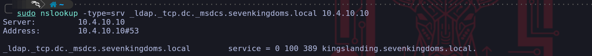

GOAD - Game Of Active Directory

Welcome to this comprehensive walkthrough of Game of Active Directory (GOAD), a project widely known in the industry as GOAD.
Note: This is the main overview page. Select a section from the sidebar to begin the walkthrough.
What is GOAD?
GOAD (Game of Active Directory) is a training lab designed to teach Active Directory attack and defense techniques in a realistic environment.
Parts
- Part 1: Reconnaissance and Scan
- Part 2: Finding Users
- Part 3: Authenticated Enumeration
- Part 4: Network Poisoning and NTLM Relaying
- Part 5: ADCS - ESC1 to ESC16
- Part 6: MSSQL
- Part 7: Privilege Escalation
- Part 8: Lateral Movement
- Part 9: Delegations
- Part 10: ACL
- Part 11: Abusing Trusts
- Part 12: Having Fun
Select a section from the sidebar to begin your walkthrough journey.